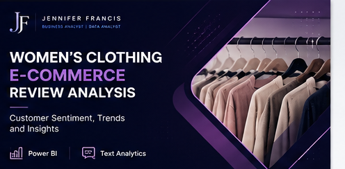
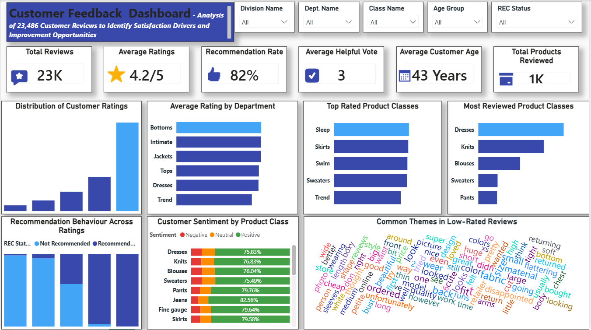

Turning 23,486 customer reviews into a Power BI dashboard and an executive summary that show what customers like, what frustrates them, and where to improve first.

The company's women's clothing e-commerce platform had 23,486 customer reviews and no structured read on what they were saying. The analysis set out to answer three questions:
I prepared the review data, analysed ratings, recommendation behaviour, product categories, sentiment, and customer feedback, then built a Power BI dashboard that can be filtered by division, department, product class, age group, and recommendation status. The findings and recommendations are written up in an executive summary.
The finished Power BI dashboard, filterable by division, department, product class, age group, and recommendation status.

Customer satisfaction is strong: an average rating of 4.2 out of 5 and a recommendation rate of about 82%. Higher ratings were strongly linked to customers recommending the products, so improving satisfaction feeds directly into customer advocacy.
Those same three classes also had the most negative reviews, but that mostly reflects how many reviews they receive. Negative Review Rate gives a fairer comparison: Blouses were highest at 11.2%, followed by Dresses at 10.9% and Knits at 10.4%. Tracking the rate of complaints rather than the count is a more accurate measure of how a product is really performing.
Want the full breakdown: dashboard, executive summary, and analysis?
View full repo on GitHub